2024
-
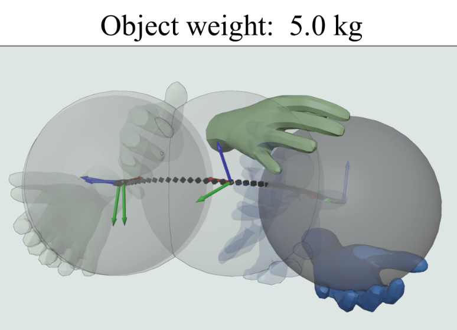
MACS: Mass Conditioned 3D Hand and Object Motion Synthesis
3DV 2024The physical properties of an object, such as mass, significantly affect how we manipulate it with our hands. Surprisingly, this aspect has so far been neglected in prior work on 3D motion synthesis. To improve the naturalness of the synthesized 3D hand-object motions, this work proposes MACS---the first MAss Conditioned 3D hand and object motion Synthesis approach. Our approach is based on cascaded diffusion models and generates interactions that plausibly adjust based on the object's mass and interaction type. MACS also accepts a manually drawn 3D object trajectory as input and synthesizes the natural 3D hand motions conditioned by the object's mass. This flexibility enables MACS to be used for various downstream applications, such as generating synthetic training data for ML tasks, fast animation of hands for graphics workflows, and generating character interactions for computer games. We show experimentally that a small-scale dataset is sufficient for MACS to reasonably generalize across interpolated and extrapolated object masses unseen during the training. Furthermore, MACS shows moderate generalization to unseen objects, thanks to the mass-conditioned contact labels generated by our surface contact synthesis model ConNet. Our comprehensive user study confirms that the synthesized 3D hand-object interactions are highly plausible and realistic. -
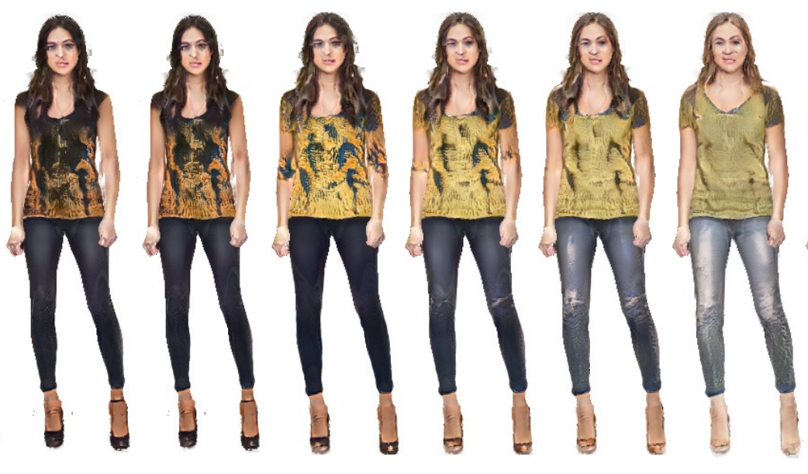
Efficient 3D GANs with Layered Surface Volumes
3DV 2024Access to high-quality and diverse 3D articulated digital human assets is crucial in various applications, ranging from virtual reality to social platforms. Generative approaches, such as 3D generative adversarial networks (GANs), are rapidly replacing laborious manual content creation tools. However, existing 3D GAN frameworks typically rely on scene representations that leverage either template meshes, which are fast but offer limited quality, or volumes, which offer high capacity but are slow to render, thereby limiting the 3D fidelity in GAN settings. In this work, we introduce layered surface volumes (LSVs) as a new 3D object representation for articulated digital humans. LSVs represent a human body using multiple textured mesh layers around a conventional template. These layers are rendered using alpha compositing with fast differentiable rasterization, and they can be interpreted as a volumetric representation that allocates its capacity to a manifold of finite thickness around the template. Unlike conventional single-layer templates that struggle with representing fine off-surface details like hair or accessories, our surface volumes naturally capture such details. LSVs can be articulated, and they exhibit exceptional efficiency in GAN settings, where a 2D generator learns to synthesize the RGBA textures for the individual layers. Trained on unstructured, single-view 2D image datasets, our LSV-GAN generates high-quality and view-consistent 3D articulated digital humans without the need for view-inconsistent 2D upsampling networks.
2023
-
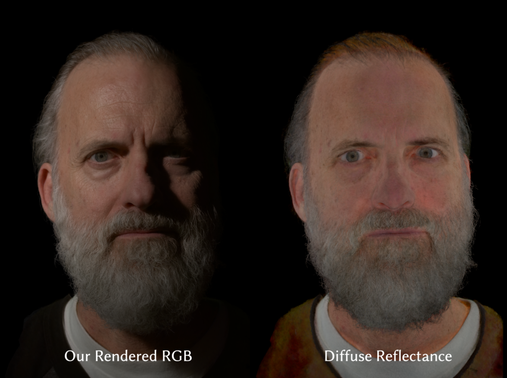
LitNeRF: Intrinsic Radiance Decomposition for High-Quality View Synthesis and Relighting of Faces
SIGGRAPH Asia 2023High-fidelity, photorealistic 3D capture of a human face is a long-standing problem in computer graphics -- the complex material of skin, intricate geometry of hair, and fine scale textural details make it challenging. Traditional techniques rely on very large and expensive capture rigs to reconstruct explicit mesh geometry and appearance maps and require complex differentiable path-tracing to achieve photorealistic results. More recent volumetric methods (\eg, NeRFs) have enabled view-synthesis and sometimes relighting by learning an implicit representation of the density and reflectance basis, but suffer from artifacts and blurriness due to the inherent ambiguities in volumetric modeling. These problems are further exacerbated when capturing with few cameras and light sources. We present a novel technique for high-quality capture of a human face for 3D view synthesis and relighting using a sparse, compact capture rig consisting of 15 cameras and 15 lights. Our method combines a volumetric representation of the face reflectance with traditional multi-view stereo based geometry reconstruction. The proxy geometry allows us to anchor the 3D density field to prevent artifacts and guide the disentanglement of intrinsic radiance components of the face appearance such as diffuse and specular reflectance, and Direct Light Transport (shadowing) fields. Our hybrid representation significantly improves the state-of-the-art quality for arbitrarily dense renders of a face from desired camera viewpoint as well as environmental, directional, and near-field lighting. -
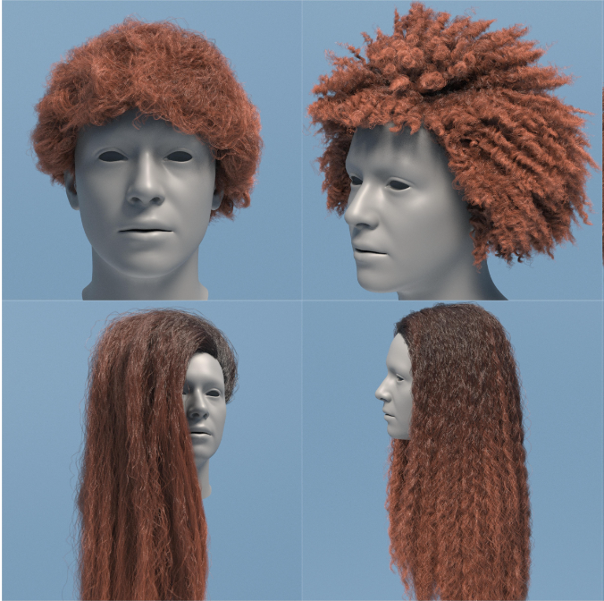
GroomGen: A High-Quality Generative Hair Model Using Hierarchical Latent Representations
SIGGRAPH Asia 2023Despite recent successes in hair acquisition that fits a high-dimensional hair model to a specific input subject, generative hair models, which establish general embedding spaces for encoding, editing, and sampling diverse hairstyles, are way less explored. In this paper, we present GroomGen, the first generative model designed for hair geometry composed of highly-detailed dense strands. Our approach is motivated by two key ideas. First, we construct hair latent spaces covering both individual strands and hairstyles. The latent spaces are compact, expressive, and well-constrained for high-quality and diverse sampling. Second, we adopt a hierarchical hair representation that parameterizes a complete hair model to three levels: single strands, sparse guide hairs, and complete dense hairs. This representation is critical to the compactness of latent spaces, the robustness of training, and the efficiency of inference. Based on this hierarchical latent representation, our proposed pipeline consists of a strand-VAE and a hairstyle-VAE that encode an individual strand and a set of guide hairs to their respective latent spaces, a hybrid densification step that populates sparse guide hairs to a dense hair model, and a neural simulator that deforms hair driven by head pose. GroomGen not only enables novel hairstyle sampling and plausible hairstyle interpolation, but could also enable interactive editing of complex hairstyles, or serve as strong data-driven prior for hairstyle reconstruction from images. We demonstrate the superiority of our approach with qualitative examples of diverse sampled hairstyles and quantitative evaluation of generation quality regarding every single component and the entire pipeline. -
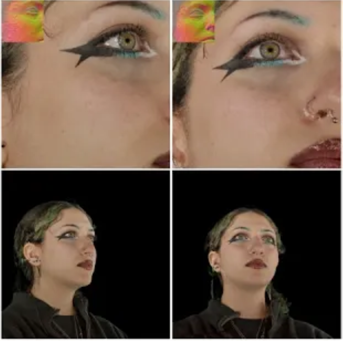
Preface: A Data-driven Volumetric Prior for Few-shot Ultra High-resolution Face Synthesis
ICCV 2023NeRFs have enabled highly realistic synthesis of human faces including complex appearance and reflectance effects of hair and skin. These methods typically require a large number of multi-view input images, making the process hardware intensive and cumbersome, limiting applicability to unconstrained settings. We propose a novel volumetric human face prior that enables the synthesis of ultra high-resolution novel views of subjects that are not part of the prior's training distribution. This prior model consists of an identity-conditioned NeRF, trained on a dataset of low-resolution multi-view images of diverse humans with known camera calibration. A simple sparse landmark-based 3D alignment of the training dataset allows our model to learn a smooth latent space of geometry and appearance despite a limited number of training identities. A high-quality volumetric representation of a novel subject can be obtained by model fitting to 2 or 3 camera views of arbitrary resolution. Importantly, our method requires as few as two views of casually captured images as input at inference time. -
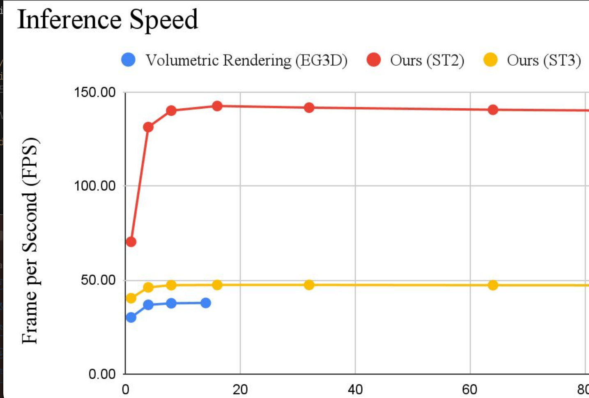
NeRF-GAN Distillation for Efficient 3D-Aware Generation with Convolutions
ICCV 2023Pose-conditioned convolutional generative models struggle with high-quality 3D-consistent image generation from single-view datasets, due to their lack of sufficient 3D priors. Recently, the integration of Neural Radiance Fields (NeRFs) and generative models, such as Generative Adversarial Networks (GANs), has transformed 3D-aware generation from single-view images. NeRF-GANs exploit the strong inductive bias of 3D neural representations and volumetric rendering at the cost of higher computational complexity. This study aims at revisiting pose-conditioned 2D GANs for efficient 3D-aware generation at inference time by distilling 3D knowledge from pretrained NeRF-GANS. We propose a simple and effective method, based on re-using the well-disentangled latent space of a pre-trained NeRF-GAN in a pose-conditioned convolutional network to directly generate 3D-consistent images corresponding to the underlying 3D representations. Experiments on several datasets demonstrate that the proposed method obtains results comparable with volumetric rendering in terms of quality and 3D consistency while benefiting from the superior computational advantage of convolutional networks. -
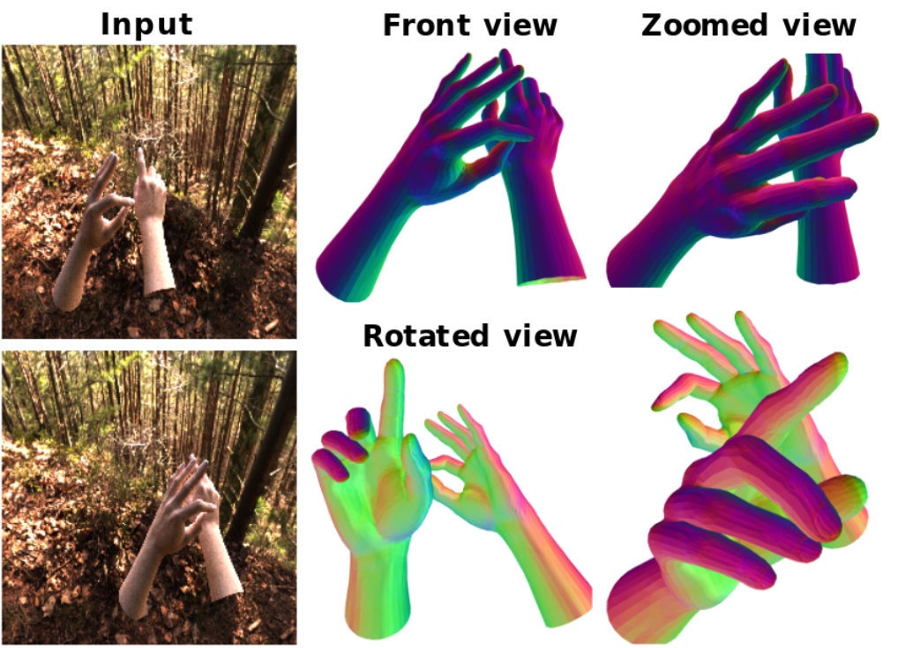
Spectral Graphormer: Spectral Graph-based Transformer for Egocentric Two-Hand Reconstruction using Multi-View Color Images
ICCV 2023We propose a novel transformer-based framework that reconstructs two high fidelity hands from multi-view RGB images. Unlike existing hand pose estimation methods, where one typically trains a deep network to regress hand model parameters from single RGB image, we consider a more challenging problem setting where we directly regress the absolute root poses of two-hands with extended forearm at high resolution from egocentric view. As existing datasets are either infeasible for egocentric viewpoints or lack background variations, we create a large-scale synthetic dataset with diverse scenarios and collect a real dataset from multi-calibrated camera setup to verify our proposed multi-view image feature fusion strategy. To make the reconstruction physically plausible, we propose two strategies: (i) a coarse-to-fine spectral graph convolution decoder to smoothen the meshes during upsampling and (ii) an optimisation-based refinement stage at inference to prevent self-penetrations. Through extensive quantitative and qualitative evaluations, we show that our framework is able to produce realistic two-hand reconstructions and demonstrate the generalisation of synthetic-trained models to real data, as well as real-time AR/VR applications. -
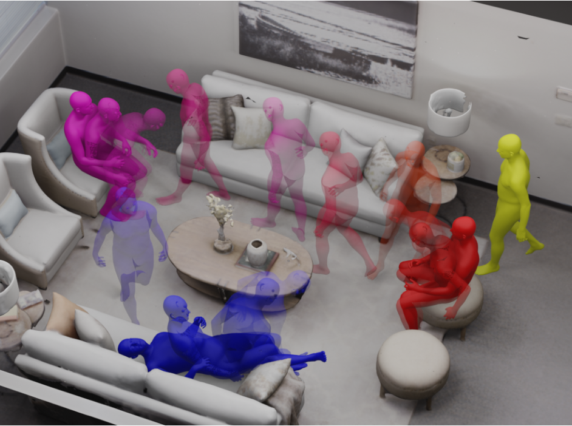
DIMOS: Synthesizing Diverse Human Motions in 3D Indoor Scenes
ICCV 2023We present a novel method for populating 3D indoor scenes with virtual humans that can navigate in the environment and interact with objects in a realistic manner. Existing approaches rely on training sequences that contain captured human motions and the 3D scenes they interact with. However, such interaction data are costly, difficult to capture, and can hardly cover all plausible human-scene interactions in complex environments. To address these challenges, we propose a reinforcement learning-based approach that enables virtual humans to navigate in 3D scenes and interact with objects realistically and autonomously, driven by learned motion control policies. The motion control policies employ latent motion action spaces, which correspond to realistic motion primitives and are learned from large-scale motion capture data using a powerful generative motion model. For navigation in a 3D environment, we propose a scene-aware policy with novel state and reward designs for collision avoidance. Combined with navigation mesh-based path-finding algorithms to generate intermediate waypoints, our approach enables the synthesis of diverse human motions navigating in 3D indoor scenes and avoiding obstacles. To generate fine-grained human-object interactions, we carefully curate interaction goal guidance using a marker-based body representation and leverage features based on the signed distance field (SDF) to encode human-scene proximity relations. Our method can synthesize realistic and diverse human-object interactions (e.g.,~sitting on a chair and then getting up) even for out-of-distribution test scenarios with different object shapes, orientations, starting body positions, and poses. Experimental results demonstrate that our approach outperforms state-of-the-art methods in terms of both motion naturalness and diversity. -
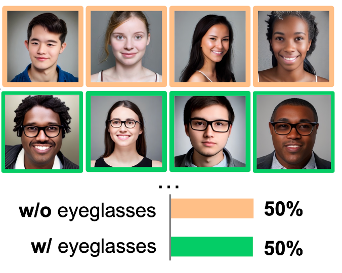
ITI-GEN: Inclusive Text-to-Image Generation
ICCV 2023 (Oral, Best Paper Finalist)Text-to-image generative models often reflect the biases of the training data, leading to unequal representations of underrepresented groups. This study investigates inclusive text-to-image generative models that generate images based on human-written prompts and ensure the resulting images are uniformly distributed across attributes of interest. Unfortunately, directly expressing the desired attributes in the prompt often leads to sub-optimal results due to linguistic ambiguity or model misrepresentation. Hence, this paper proposes a drastically different approach that adheres to the maxim that "a picture is worth a thousand words". We show that, for some attributes, images can represent concepts more expressively than text. For instance, categories of skin tones are typically hard to specify by text but can be easily represented by example images. Building upon these insights, we propose a novel approach, ITI-GEN, that leverages readily available reference images for Inclusive Text-to-Image GENeration. The key idea is learning a set of prompt embeddings to generate images that can effectively represent all desired attribute categories. More importantly, ITI-GEN requires no model fine-tuning, making it computationally efficient to augment existing text-to-image models. Extensive experiments demonstrate that ITI-GEN largely improves over state-of-the-art models to generate inclusive images from a prompt. -
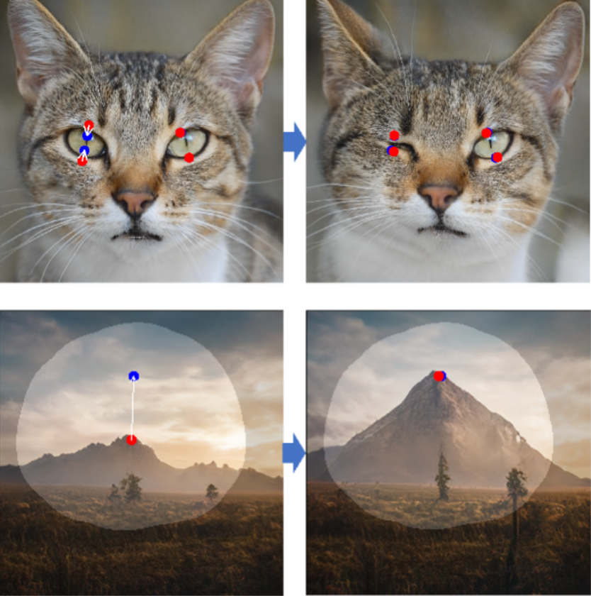
Drag Your GAN: Interactive Point-based Manipulation on the Generative Image Manifold
SIGGRAPH 2023Synthesizing visual content that meets users' needs often requires flexible and precise controllability of the pose, shape, expression, and layout of the generated objects. Existing approaches gain controllability of generative adversarial networks (GANs) via manually annotated training data or a prior 3D model, which often lack flexibility, precision, and generality. In this work, we study a powerful yet much less explored way of controlling GANs, that is, to "drag" any points of the image to precisely reach target points in a user-interactive manner, as shown in Fig.1. To achieve this, we propose DragGAN, which consists of two main components including: 1) a feature-based motion supervision that drives the handle point to move towards the target position, and 2) a new point tracking approach that leverages the discriminative GAN features to keep localizing the position of the handle points. Through DragGAN, anyone can deform an image with precise control over where pixels go, thus manipulating the pose, shape, expression, and layout of diverse categories such as animals, cars, humans, landscapes, etc. As these manipulations are performed on the learned generative image manifold of a GAN, they tend to produce realistic outputs even for challenging scenarios such as hallucinating occluded content and deforming shapes that consistently follow the object's rigidity. Both qualitative and quantitative comparisons demonstrate the advantage of DragGAN over prior approaches in the tasks of image manipulation and point tracking. We also showcase the manipulation of real images through GAN inversion. -
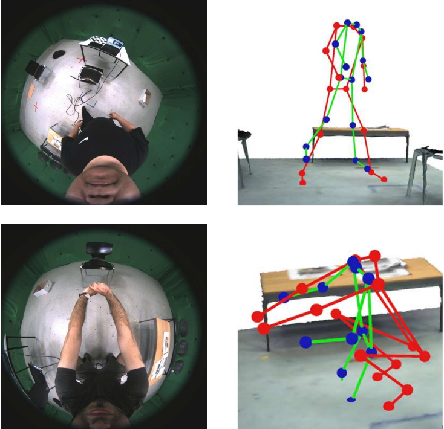
Scene-aware Egocentric 3D Human Pose Estimation
CVPR 2023Egocentric 3D human pose estimation with a single head-mounted fisheye camera has recently attracted attention due to its numerous applications in virtual and augmented reality. Existing methods still struggle in challenging poses where the human body is highly occluded or is closely interacting with the scene. To address this issue, we propose a scene-aware egocentric pose estimation method that guides the prediction of the egocentric pose with scene constraints. To this end, we propose an egocentric depth estimation network to predict the scene depth map from a wide-view egocentric fisheye camera while mitigating the occlusion of the human body with a depth-inpainting network. Next, we propose a scene-aware pose estimation network that projects the 2D image features and estimated depth map of the scene into a voxel space and regresses the 3D pose with a V2V network. The voxel-based feature representation provides the direct geometric connection between 2D image features and scene geometry, and further facilitates the V2V network to constrain the predicted pose based on the estimated scene geometry. To enable the training of the aforementioned networks, we also generated a synthetic dataset, called EgoGTA, and an in-the-wild dataset based on EgoPW, called EgoPW-Scene. The experimental results of our new evaluation sequences show that the predicted 3D egocentric poses are accurate and physically plausible in terms of human-scene interaction, demonstrating that our method outperforms the state-of-the-art methods both quantitatively and qualitatively. -
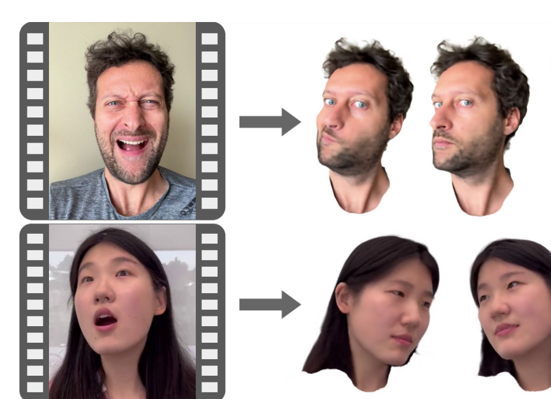
MonoAvatar: Learning Personalized High Quality Volumetric Head Avatars from Monocular RGB Videos
CVPR 2023We propose a method to learn a high-quality implicit 3D head avatar from a monocular RGB video captured in the wild. The learnt avatar is driven by a parametric face model to achieve user-controlled facial expressions and head poses. Our hybrid pipeline combines the geometry prior and dynamic tracking of a 3DMM with a neural radiance field to achieve fine-grained control and photorealism. To reduce over-smoothing and improve out-of-model expressions synthesis, we propose to predict local features anchored on the 3DMM geometry. These learnt features are driven by 3DMM deformation and interpolated in 3D space to yield the volumetric radiance at a designated query point. We further show that using a Convolutional Neural Network in the UV space is critical in incorporating spatial context and producing representative local features. Extensive experiments show that we are able to reconstruct high-quality avatars, with more accurate expression-dependent details, good generalization to out-of-training expressions, and quantitatively superior renderings compared to other state-of-the-art approaches.
2022
-
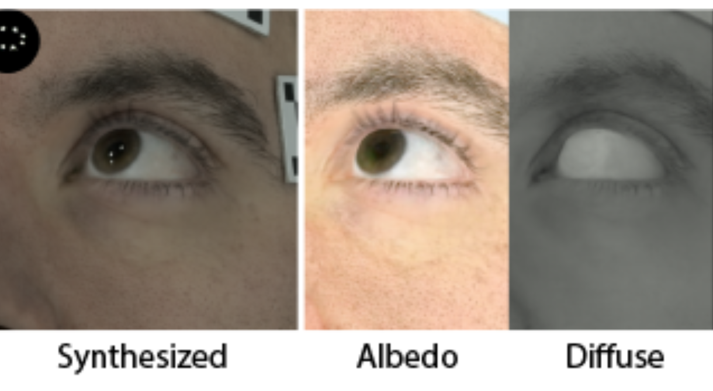
EyeNeRF: A Hybrid Representation for Photorealistic Synthesis, Animation and Relighting of Human Eyes
SIGGRAPH 2022A unique challenge in creating high-quality animatable and relightable 3D avatars of real people is modeling human eyes, particularly in conjunction with the surrounding periocular face region. The challenge of synthesizing eyes is multifold as it requires 1) appropriate representations for the various components of the eye and the periocular region for coherent viewpoint synthesis, capable of representing diffuse, refractive and highly reflective surfaces, 2) disentangling skin and eye appearance from environmental illumination such that it may be rendered under novel lighting conditions, and 3) capturing eyeball motion and the deformation of the surrounding skin to enable re-gazing. These challenges have traditionally necessitated the use of expensive and cumbersome capture setups to obtain high-quality results, and even then, modeling of the full eye region holistically has remained elusive. We present a novel geometry and appearance representation that enables high-fidelity capture and photorealistic animation, view synthesis and relighting of the eye region using only a sparse set of lights and cameras. Our hybrid representation combines an explicit parametric surface model for the eyeball surface with implicit deformable volumetric representations for the periocular region and the interior of the eye. This novel hybrid model has been designed specifically to address the various parts of that exceptionally challenging facial area - the explicit eyeball surface allows modeling refraction and high frequency specular reflection at the cornea, whereas the implicit representation is well suited to model lower frequency skin reflection via spherical harmonics and can represent non-surface structures such as hair (i.e. eyebrows) or highly diffuse volumetric bodies (i.e. sclera), both of which are a challenge for explicit surface models. Tightly integrating the two representations in a joint framework allows controlled photoreal image synthesis and joint optimization of both the geometry parameters of the eyeball and the implicit neural network in continuous 3D space. We show that for high-resolution close-ups of the human eye, our model can synthesize high-fidelity animated gaze from novel views under unseen illumination conditions, allowing to generate visually rich eye imagery. -
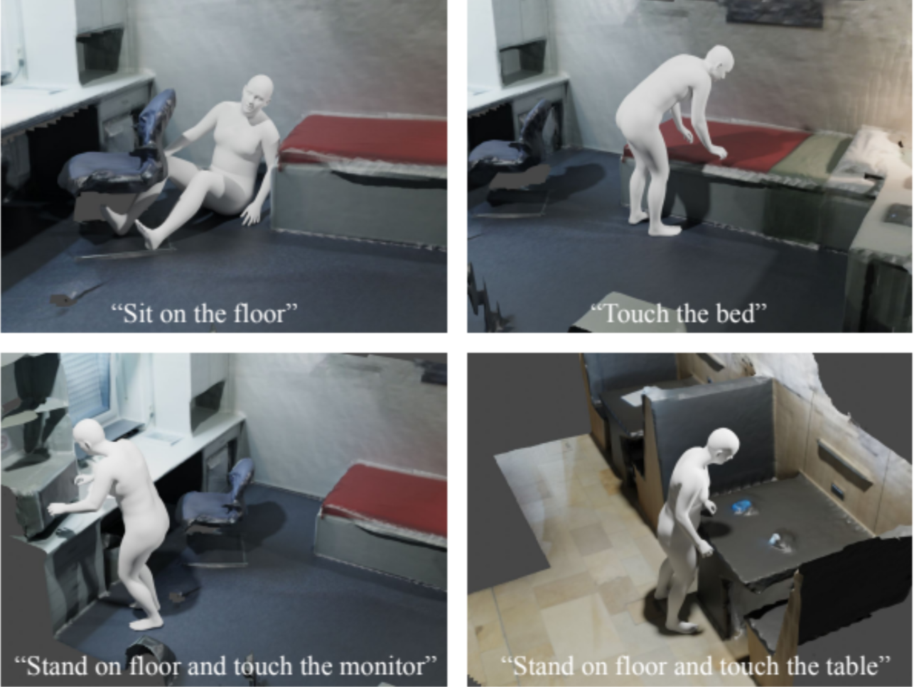
COINS: Compositional Human-Scene Interaction Synthesis with Semantic Control
ECCV 2022The physical properties of an object, such as mass, significantly affect how we manipulate it with our hands. Surprisingly, this aspect has so far been neglected in prior work on 3D motion synthesis. To improve the naturalness of the synthesized 3D hand-object motions, this work proposes MACS---the first MAss Conditioned 3D hand and object motion Synthesis approach. Our approach is based on cascaded diffusion models and generates interactions that plausibly adjust based on the object's mass and interaction type. MACS also accepts a manually drawn 3D object trajectory as input and synthesizes the natural 3D hand motions conditioned by the object's mass. This flexibility enables MACS to be used for various downstream applications, such as generating synthetic training data for ML tasks, fast animation of hands for graphics workflows, and generating character interactions for computer games. We show experimentally that a small-scale dataset is sufficient for MACS to reasonably generalize across interpolated and extrapolated object masses unseen during the training. Furthermore, MACS shows moderate generalization to unseen objects, thanks to the mass-conditioned contact labels generated by our surface contact synthesis model ConNet. Our comprehensive user study confirms that the synthesized 3D hand-object interactions are highly plausible and realistic.
2021
-

VariTex: Variational Neural Face Textures
ICCV 2021Deep generative models can synthesize photorealistic images of human faces with novel identities. However, a key challenge to the wide applicability of such techniques is to provide independent control over semantically meaningful parameters: appearance, head pose, face shape, and facial expressions. In this paper, we propose VariTex - to the best of our knowledge the first method that learns a variational latent feature space of neural face textures, which allows sampling of novel identities. We combine this generative model with a parametric face model and gain explicit control over head pose and facial expressions. To generate complete images of human heads, we propose an additive decoder that adds plausible details such as hair. A novel training scheme enforces a pose-independent latent space and in consequence, allows learning a one-to-many mapping between latent codes and pose-conditioned exterior regions. The resulting method can generate geometrically consistent images of novel identities under fine-grained control over head pose, face shape, and facial expressions. This facilitates a broad range of downstream tasks, like sampling novel identities, changing the head pose, expression transfer, and more. -
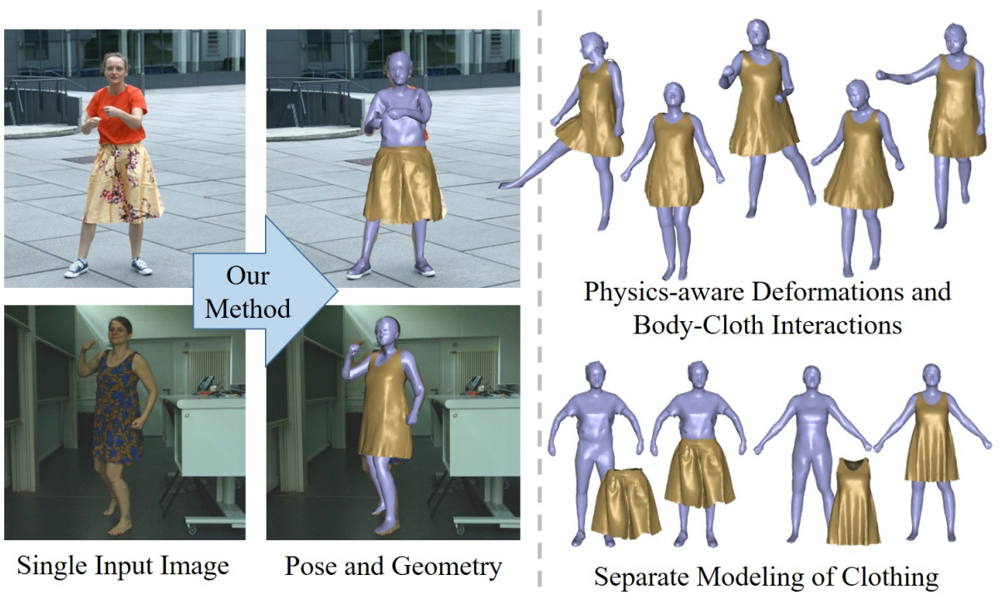
Deep Physics-aware Inference of Cloth Deformation for Monocular Human Performance Capture
3DV 2021Recent monocular human performance capture approaches have shown compelling dense tracking results of the full body from a single RGB camera. However, existing methods either do not estimate clothing at all or model cloth deformation with simple geometric priors instead of taking into account the underlying physical principles. This leads to noticeable artifacts in their reconstructions, \eg baked-in wrinkles, implausible deformations that seemingly defy gravity, and intersections between cloth and body. To address these problems, we propose a person-specific, learning-based method that integrates a simulation layer into the training process to provide for the first time physics supervision in the context of weakly supervised deep monocular human performance capture. We show how integrating physics into the training process improves the learned cloth deformations, allows modeling clothing as a separate piece of geometry, and largely reduces cloth-body intersections. Relying only on weak 2D multi-view supervision during training, our approach leads to a significant improvement over current state-of-the-art methods and is thus a clear step towards realistic monocular capture of the entire deforming surface of a clothed human.
2020
-
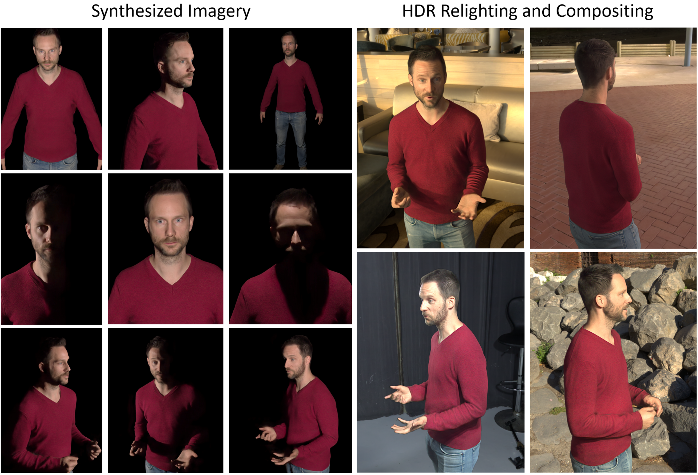
Deep Relightable Textures
SIGGRAPH Asia 2020The increasing demand for 3D content in augmented and virtual reality has motivated the development of volumetric performance capture systems such as the Light Stage. Recent advances are pushing free viewpoint relightable videos of dynamic human performances closer to photorealistic quality. However, despite significant efforts, these sophisticated systems are limited by reconstruction and rendering algorithms which do not fully model complex 3D structures and higher order light transport effects such as global illumination and sub-surface scattering. In this paper, we propose a system that combines traditional geometric pipelines with a neural rendering scheme to generate photorealistic renderings of dynamic performances under desired viewpoint and lighting. Our system leverages deep neural networks that model the classical rendering process to learn implicit features that represent the view-dependent appearance of the subject independent of the geometry layout, allowing for generalization to unseen subject poses and even novel subject identity. Detailed experiments and comparisons demonstrate the efficacy and versatility of our method to generate high-quality results, significantly outperforming the existing state-of-the-art solutions.